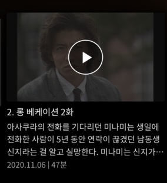

설레는 마음으로... 1화
친구들이 하도 강력 추천해서 나름 기대에 찬 마음으로(외국 문물을 처음 접하는 사람처럼) 1화를 틀었다.

...
내가 알기로 일본 사람들은 남에게 피해 주는 걸 극도로 싫어한다던데. 초반부터 남의 집에 막 들어가고, 이사 오고, 난리를 떤다. 특히 밤에 피아노를 치거나 탱탱볼을 튀기고, 창문 밖에서 튀길 때는 혼자 사는 것도 아닌데 어떻게 저럴 수가… 하는 유교적인 생각이 들었다.
1화를 엄청 끊어 봐서 해가 떠 있는 낮에 시작하 해가 사라진 깜깜한 밤까지 봤다.
친구들한테 1화를 보고 난 후 감상을 전해주니
“니가 화낸 장면들 다 로맨틱한 장면인데…."
“난 니가 이렇게 예의걸일 줄 몰랐다.”
“온갖 로맨틱한 장면에서 분노하다니.”
라는 답변이 돌아왔다.
나는 어쩔 수 없는 유교 국가의 산물인가 보다.
친구들에게 이게 맞는 거냐라는 질문을 열 번 넘게 던졌고, 친구들은 2화까지만 참아라 혹은 그래서 아름다운 거라는 대답을 주었다…. 또한 일드광인 친구 A는 일드는 민폐캐가 있어야 굴러간다는 말도 해 주었다. (친구의 주관임을 알려 드립니다)
자아가 흔들리는... 2
그래도 2화까지는 참고 봐야 한다고 해서 2화를 틀었다.
으아아ㅏㅇ아ㅏㅏ악
나는 내가 흥선대원군이 아니라 고릴라가 아닐까 하는 의심이 들었다.
주인공인 세나와 미나미 때문에 답답해서 자꾸 가슴만 퍽퍽 치게 됐다.
미나미는 먼저 세나에게 못된 말을 뱉는다. 거기에 세나가 반격한다. 미나미는 큰 상처를 받는다. 먼저 등을 돌린다. 세나는 당황한다. 결국 화해한다.
이게 뭐지? 물론 이런 게 로맨스 드라마의 매력이지만…. 몰입하기 쉽지 않다. 미나미가 세나의 집에 처들어갔다는 생각이 머릿속에서 지워지지 않아서 그런 것 같기도.
.
.
.
명작이라고 불리는 데는 다 이유가 있다.
일단 칼을 뽑았으면 무라도 썰어란 말이 있듯이,
이왕 시작한 거 끝까지 보고 친구들이 열광한 이유에 꼭 공감하고 말겠다.
<외전>
1화를 보는 도중 설전을 벌이다.
기무라 타쿠야 vs 원빈
당신의 선택은?